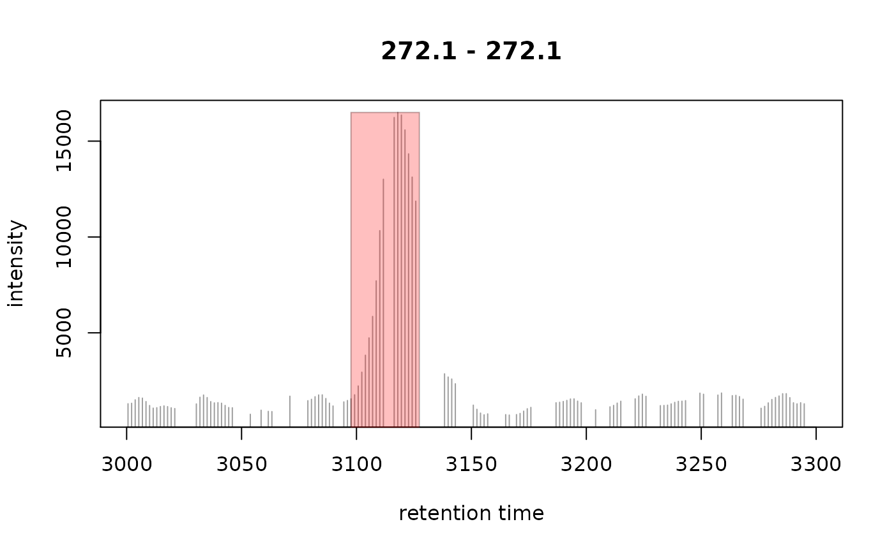

Identify peaks in chromatographic data using centWave
Source:R/do_findChromPeaks-functions.R
peaksWithCentWave.RdpeaksWithCentWave identifies (chromatographic) peaks in purely
chromatographic data, i.e. based on intensity and retention time values
without m/z values.
Arguments
- int
numericwith intensity values.- rt
numericwith the retention time for the intensities. Length has to be equal tolength(int).- peakwidth
numeric(2)with the lower and upper bound of the expected peak width.- snthresh
numeric(1)defining the signal to noise ratio cutoff. Peaks with a signal to noise ratio <snthreshare omitted.- prefilter
numeric(2)(c(k, I)): only regions of interest with at leastkcentroids with signal>= Iare returned in the first step.- integrate
numeric(1), integration method. Forintegrate = 1peak limits are found through descending on the mexican hat filtered data, forintegrate = 2the descend is done on the real data. The latter method is more accurate but prone to noise, while the former is more robust, but less exact.- fitgauss
logical(1)whether or not a Gaussian should be fitted to each peak.- noise
numeric(1)defining the minimum required intensity for centroids to be considered in the first analysis step (definition of the regions of interest).- verboseColumns
logical(1): whether additional peak meta data columns should be returned.- firstBaselineCheck
logical(1). IfTRUEcontinuous data within regions of interest is checked to be above the first baseline. In detail, a first rough estimate of the noise is calculated and peak detection is performed only in regions in which multiple sequential signals are higher than this first estimated baseline/noise level.- extendLengthMSW
logical(1). IfTRUEthe "open" method of EIC extension is used, rather than the default "reflect" method.- ...
currently ignored.
Value
A matrix, each row representing an identified chromatographic peak, with columns:
"rt": retention time of the peak's midpoint (time of the maximum signal)."rtmin": minimum retention time of the peak."rtmax": maximum retention time of the peak."into": integrated (original) intensity of the peak."intb": per-peak baseline corrected integrated peak intensity."maxo": maximum (original) intensity of the peak."sn": signal to noise ratio of the peak defined as(maxo - baseline)/sdwithsdbeing the standard deviation of the local chromatographic noise.
Additional columns for verboseColumns = TRUE:
"mu": gaussian parameter mu."sigma": gaussian parameter sigma."h": gaussian parameter h."f": region number of the m/z ROI where the peak was localized."dppm": m/z deviation of mass trace across scans in ppm (alwaysNA)."scale": scale on which the peak was localized."scpos": peak position found by wavelet analysis (index inint)."scmin": left peak limit found by wavelet analysis (index inint)."scmax": right peak limit found by wavelet analysis (index inint).
Details
The method uses the same algorithm for the peak detection than centWave,
employs however a different approach to identify the initial regions in
which the peak detection is performed (i.e. the regions of interest ROI).
The method first identifies all local maxima in the chromatographic data and
defines the corresponding positions +/- peakwidth[2] as the ROIs. Noise
estimation bases also on these ROIs and can thus be different from centWave
resulting in different signal to noise ratios.
See also
centWave for a detailed description of the peak detection method.
Other peak detection functions for chromatographic data:
peaksWithMatchedFilter()
Examples
## Reading a file
library(xcms)
od <- readMSData(system.file("cdf/KO/ko15.CDF", package = "faahKO"),
mode = "onDisk")
#> Polarity can not be extracted from netCDF files, please set manually the polarity with the 'polarity' method.
## Extract chromatographic data for a small m/z range
mzr <- c(272.1, 272.2)
chr <- chromatogram(od, mz = mzr, rt = c(3000, 3300))[1, 1]
int <- intensity(chr)
rt <- rtime(chr)
## Plot the region
plot(chr, type = "h")
## Identify peaks in the chromatographic data
pks <- peaksWithCentWave(intensity(chr), rtime(chr))
pks
#> rt rtmin rtmax into intb maxo sn
#> [1,] 3119.535 3097.625 3127.359 247211.6 227217.9 16496 24
## Highlight the peaks
rect(xleft = pks[, "rtmin"], xright = pks[, "rtmax"],
ybottom = rep(0, nrow(pks)), ytop = pks[, "maxo"], col = "#ff000040",
border = "#00000040")
